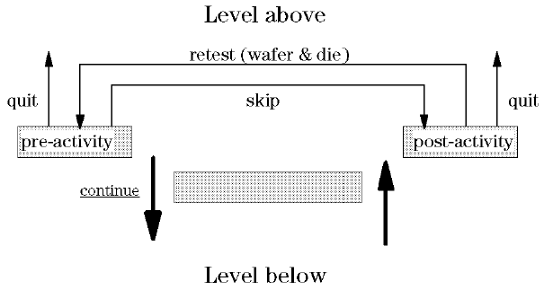
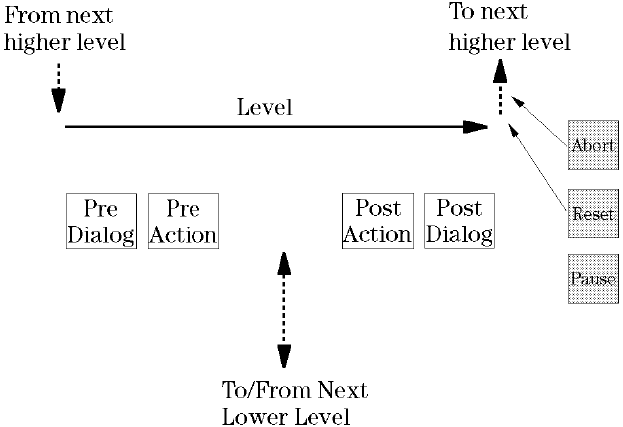
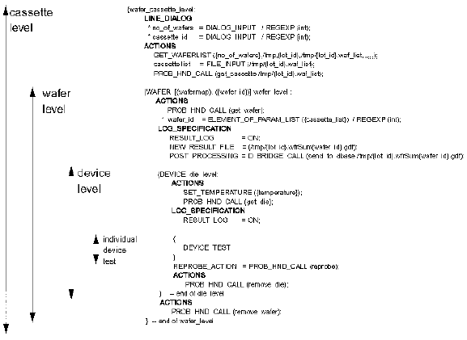

The Structure of the Levels
Each individual level in the application model comprises some pre-activity before the next lower level is reached; after the next lower level has been executed a post-sequence occurs. The level (or these pre- and post-sequences) is repeated a defined number of times, before returning to the level above, or ending the test program. The figure below shows the structure.

Each of the (optional) pre- and post-activities comprises a sequence of events. The pre-activity comprises,
Pre-Dialog |
one (or more) operator data-entry screens/fields, comprising a combination of buttons, menus, input-fields, etc. A typical example is the workorder select menu. |
Pre-Action |
some defined action (an execution input call, for example) that is performed before entering the next lower level. |
Data log |
determines what is done with the data collated during execution of this particular level. |
The post-activity comprises,
Post-Action |
some defined action (an execution input call, for example) that is performed immediately after the next lower level has been exited. |
Post-Dialog |
one (or more) operator data-entry screens/fields, comprising a combination of buttons, menus, input-fields, etc., that are executed before moving to the next higher level. |
The figure below shows the sequence of events.

The figure above shows only the sequence of events in any one level; however, you do not have to use all the events in any one level. For example, you may not need a pre- or post-dialog in a particular level; you would, therefore, not define this in your application model file.
The text below is taken from a typical application model file. You can clearly see the pre- and post- actions and dialogs (REPROBE_ACTION, in the device level, is a special type of post-action, performed only if a device falls into a reprobe bin - see Syntax of the application model file for further information).

Syntax of the application model file gives a full explanation of the syntax used in the lines above.